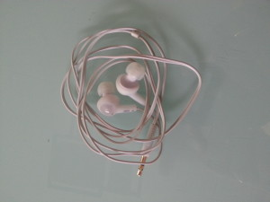

So, you can ssh into your Raspberry Pi, even if you don't have any HDMI-capable display equipment at hand. The trick, though, is knowing what IP address gets assigned to the Pi so that you know what to feed into your ssh client.
Earlier, these pages addressed this problem using VNC to provide a remote Raspberry Pi display (eg, from your laptop). It's a good approach, well documented.
Alternately, with a little bit of prep work, perhaps using the above technique to get everything set up to start, you can program your Pi to announce its IP address via audio using text-to-speech.
[caption id="attachment_1665" align="aligncenter" width="300"] Much cheaper output than a HDMI-capable monitor[/caption]
The essence of this trick is to install a text-to-speech program, create a small script to extract the IP address, to pass that address to the text-to-speech program, and then finally to configure the initialization scripts to run the readout script shortly after booting.
I'm working with a rev B Raspberry Pi running Raspbian, but the approach should be generalizable to any distro for which a TTS package is available.
First, set up the Raspberry Pi with keyboard, mouse, wired networking, and video, either HDMI or analog. If you use analog, you may need to increase the font size considerably even to be able to read the screen. Open a terminal and install festival:
sudo apt-get install festival
Next, if you haven't already done so, create a bin directory in your home directory to hold this and other small local scripts and programs:
mkdir ~/bin
Then, open your favorite editor to create a small script file containing the following:
`` #!/usr/bin/bash /usr/bin/amixer cset numid=3 1 /sbin/ifconfig | /bin/grep -A3 eth0 | /bin/grep inet | /usr/bin/tr ':' ' ' | /usr/bin/cut -d-f 13 | /usr/bin/festival --tts``
Be careful if you try to copy-and-paste that that a) you get the single-quotes carried over into the right place and b) that you don't have any space or tab or other otherwise hard-to-see non-newline whitespace characters at the end of the lines with backslashes. If either error crops up, edit to fix.
(NB: ifconfig is a bit old school. Interlock HAM and rally enthusiast HoopyCat points out that to be fully kids-these-days compliant, one should use the ip command.)*
Save the file as /home/pi/bin/ippixvox.sh and give it execute permissions with chmod a+x /home/pi/bin/ippixvox.sh
into your terminal with a speaker or earphones plugged in. If you are connected to a network (and if not, how did you get festival downloaded?) you should hear the IPv4 address read off. If not, run ifconfig to check to make sure you do have IPv4 address ("inet") assigned, and that it is assigned to eth0. If it's assigned to something other than eth0, modify the script above to suit.
in an editor and add at the very bottom this one line
/home/pi/bin/ippivox.sh
Save, reboot, and listen for the IP address to be read to you.
If it works, then you can dispense with attaching a video output device when it comes time to hack on the Pi in favor of just logging in from a machine elsewhere on the same network using ssh.
I find it useful to play a short alert announcement before the IP address is read. I also use a second TTS program, flite, both to give me a second shot at hearing the IP and also in hopes that I'll be better able to understand at least one of them.
My more lengthy approach to this is documented in the following github gist:
https://gist.github.com/deejoe/ce7984f94b91bdb6b48e
Thanks go Matt via the Raspberry Pi blog for this tip on configuring the audio.